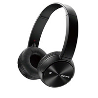

L'inform


Sony MDRZX330BT
Réf Sony : MDRZX330BT.CE7
Casque nomade - Supra-aural - Bluetooth - Télécommande et microphone intégré
Réf Sony : MDRZX330BT.CE7
Casque nomade - Supra-aural - Bluetooth - Télécommande et microphone intégré
Sony MDRZX330BT
SONY
Garantie légale de conformité: 2 ans
MDRZX330BT
Lors de vos déplacements, écoutez vos morceaux préférés avec un son clair et équilibré grâce au casque MDR-ZX330BT équipé de diaphragmes dynamiques de 30 mm. Ses coussinets rembourrés vous offrent un confort optimal. De plus, avec sa conception légère et pliable, ce casque vous suit dans tous vos déplacements, qu'il soit sur vos oreilles ou rangé dans votre sac. Plus besoin de câbles, ce casque possède la technologie Bluetooth et NFC.
Caractéristiques:
SONY
Garantie légale de conformité: 2 ans
MDRZX330BT
Lors de vos déplacements, écoutez vos morceaux préférés avec un son clair et équilibré grâce au casque MDR-ZX330BT équipé de diaphragmes dynamiques de 30 mm. Ses coussinets rembourrés vous offrent un confort optimal. De plus, avec sa conception légère et pliable, ce casque vous suit dans tous vos déplacements, qu'il soit sur vos oreilles ou rangé dans votre sac. Plus besoin de câbles, ce casque possède la technologie Bluetooth et NFC.
Caractéristiques:
- Contrôle du volume, musique et prise des appels sur le casque. Microphone intégré.
- Diaphragmes de 30 mm en forme de dôme pour un son équilibré
- Des aimants en néodyme offrent un son puissant
- Gamme de fréquences de 20 à 20 kHz
- Oreillettes rembourrées pour un grand confort d'écoute
- Bluetooth 3.0 ( jusqu'à 10 mètres) + NFC
- Ecouteurs pivotants
- Alimentation via câble micro USB/USB
- Autonomie : Jusqu’à 30h en lecture et en communication
- Batterie Li-Ion rechargeable
- Témoin lumineux de charge et d’épuisement de la batterie
- Recharge complète en 4h